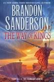
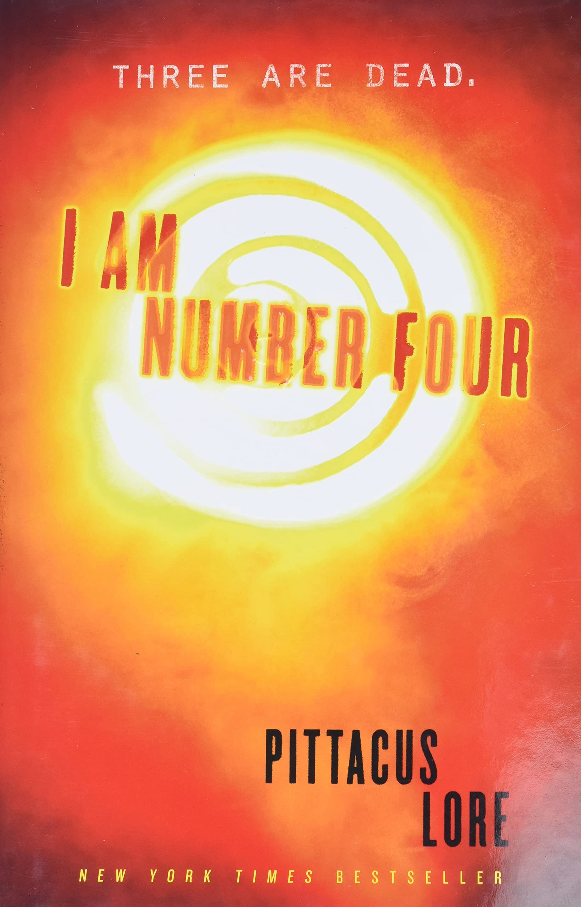
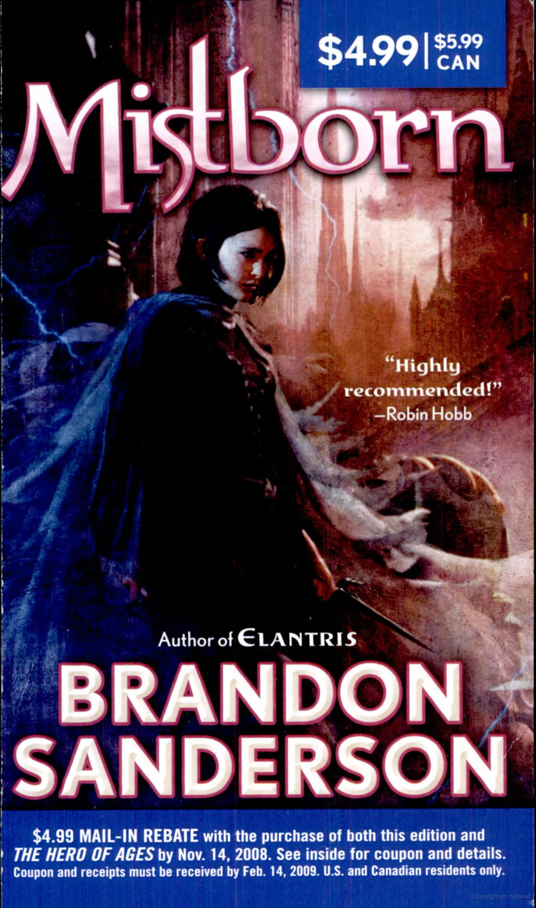
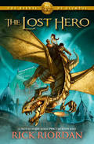

During break my friends and I booked an airbnb together in Plum Beach, Newbury. I brought my wii and we made lots of good food!
To cite my sources: my girlfriend made two of these.
This place has some of the most delicious ramen around! Easily some of the most flavorful broth in the city, with an affordable price to match. If you want to see more just look at their menu here.
| Name | Cover | Author | Cliff Notes |
| The Way of Kings |  | Brandon Sanderson | The Way of Kings follows Kaladin, a slave who becomes a leader during a deadly war. At the same time, Shallan tries to learn from a famous scholar while hiding a dangerous secret. |
| I Am Number Four |  | Pittacus Lore | A group of superpowered children flee from the wreckage of their homeworld. They split up and hide on earth, looking to lay low and develop their powers further. Unfortunately the alien race that destroyed their home are looking to finish the job. |
| The Final Empire |  | Brandon Sanderson | The book is set in a dark fantasy world where the prophesized hero had lost, allowing an evil empire to reign for thousands of years. The plot follows a group of rebels looking to overthrow this empire. |
| The Lost Hero |  | Rick Riordan | The Lost Hero follows Jason, a boy with no memory, as he joins Piper and Leo on a quest to rescue a goddess and stop a dangerous enemy. Together, they uncover hidden powers and secrets about their pasts. |